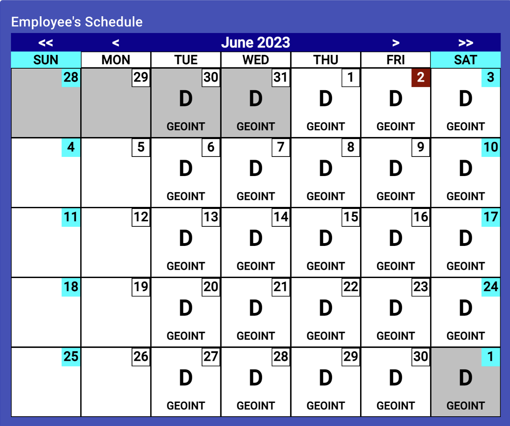

Employee Schedule/Calendar

This schedule is provided in calendar format showing all the employee’s
work assignments and approved leave during the selected month. To change
the displayed month:
- Click the "<<" button at the top-left to move backward one year
- Click the "<" button at the top-left to move backward one month
- Click the ">" button at the top-left to move forward one month
- Click the ">>" button at the top-left to move forward one year
The display is view only, so other than selecting the month to view, no
other actions are possible. Grayed out areas are for previous and next
month’s days. Each work or leave day displays with the assigned color scheme
for the large code in the middle of each day. The box in the upper-right of
each day block reflects the day of the month, today is colored in a red tint,
while weekends are cyan. The large 1–2-character code in the middle of the
day block shows the work or leave code. The word(s) at the bottom of the day
block are the only for workdays and show the work center within the site the
individual is to work at. The system determines which code to display by
finding the individual’s current work assignment for the day, then checks for
any workday variations annotated, and lastly looks for approved leave. The
priority of display is the reverse or leave-variation-assignment data is
displayed.
Logging In and Out
Employee PTO/Holiday List